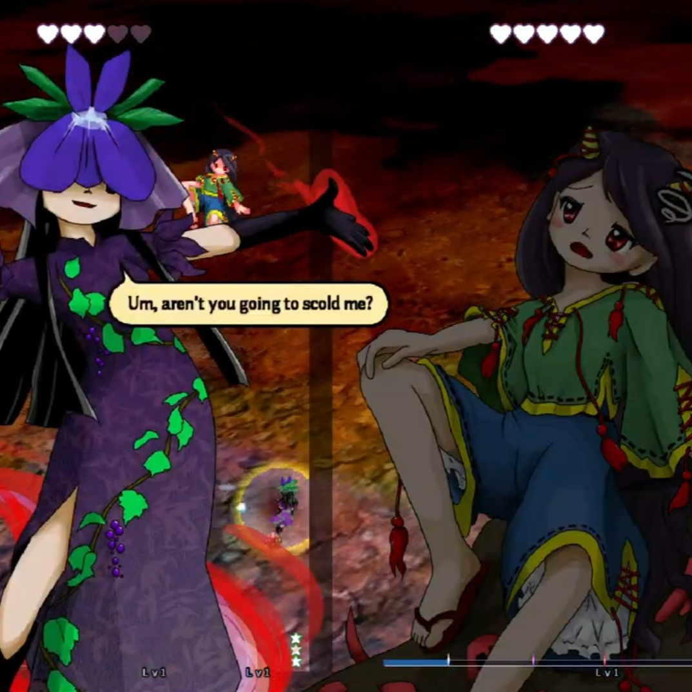
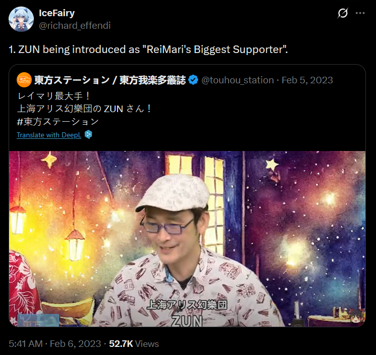

Reception
Touhou is a relatively niche franchise. Professional reviews are hard to come by, and most discussion of the series is done in online communities on social media such as Reddit or Twitter. That isn't to say that the series isn't massive, it's just bigger in other parts of the world, like its home country of Japan. This comes with many caveats, as online spaces often aren't the best for sophisticated discussions. The community is full of people from many walks of life, so sometimes there ends up being infighting, but this is naturally the case with any online community. Still, a big part of the appeal is the massive online community, and how characters are loved and explored in all sorts of different ways.
Fandom Culture
Due to the significant presence of an online community, all of the natural happenings come with it. Shipping culture is a massive part of the series, and a big appeal for many. People love exploring the relationships between characters, whether it's platonic or romantic. The lack of males in the series naturally leads to ships being between women. This is all done for fun, but there have been many cases where dialogue could be interpreted as flirting between characters, especially given how close some of their relationships are. In fact, one of the characters from a more recent game, Hisami Yomotsu, has an obsession with another character, Zanmu Nippaku, and she repeatedly asks to be scolded. Many people have a hard time believing this woman is straight, and rightfully so.

There is no straight
explanation for this dialogue
Although not everything should be relegated to the fans, it is also worth noting that the community has done a lot of work when it comes to diversifying characters even more. Fans often make headcanons of the characters, personal interpretations that may greatly vary. These are typically done to deeper connect with characters, with people from under-represented groups seeking representation. Other times people make the connection if something just makes sense, such as a character who spends time in the sun likely being tan. These can range from the personalities of characters to their ethnicity and even some characters being headcanoned as being neurodivergent. The series lends itself to fan reinterpretations quite easily, with it even being encouraged. ZUN interacts with fans every so often, responding to questions in radio shows, and one time even got introduced as "ReiMari's Biggest Supporter" (ReiMari being a pairing between the series's main protagonists, Reimu and Marisa).

As previously mentioned, since the community is so diverse, there ends up being division when it comes to this. A lot of people are very outspoken about their beliefs, spreading hatred and shutting down those who ship characters. There's always going to be bad actors in communities no matter what, but it is worth acknowledging this fact.